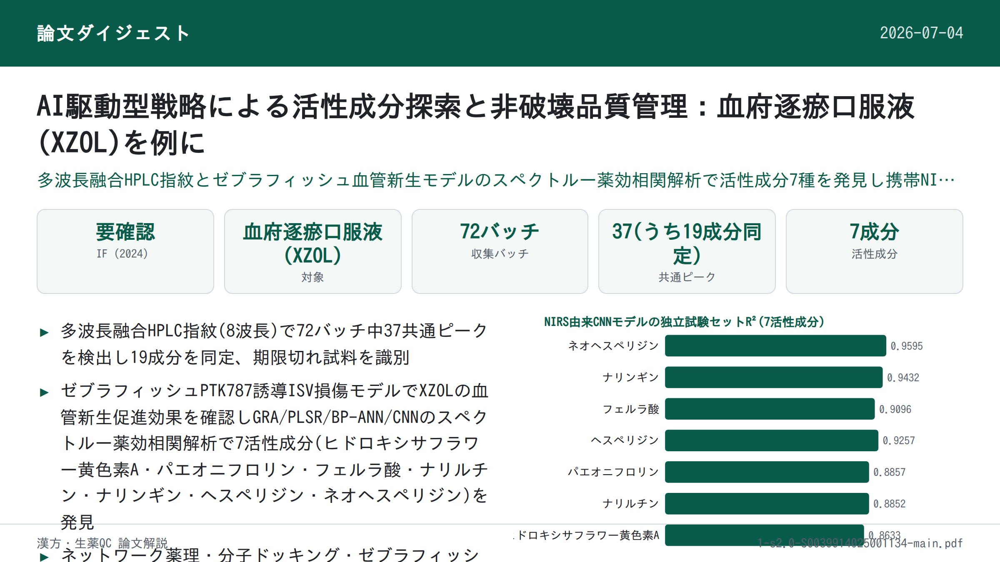

AI駆動型戦略による活性成分探索と非破壊品質管理：血府逐瘀口服液(XZOL)を例に

書誌情報
- 標題（原題）: An AI-driven strategy for active compounds discovery and non-destructive quality control in traditional Chinese medicine: A case of Xuefu Zhuyu Oral Liquid
- 著者・所属: Lele Gao, Liang Zhong, Tingting Feng, Jianan Yue, Qingqing Lu, Lian Li, Aoli Wu, Guimei Lin, Qiuxia He, Kechun Liu, Guiyun Cao, Zhaoqing Meng, Lei Nie, Hengchang Zang（山東大学 斉魯医学院 薬学院 NMPA薬物製品技術研究評価重点実験室／斉魯工業大学（山東省科学院）生物研究所／山東宏済堂製薬集団, 中国）
- 掲載誌・巻号・DOI: Talanta 287 (2025) 127627. https://doi.org/10.1016/j.talanta.2025.127627
- インパクトファクター: 要確認（Talanta, JCR 2024 / Clarivate）。複数の二次情報源（bioxbio、citefactor等）で 6.0〜6.7 程度の値が挙げられているが、出典間で数値が一致せず、Clarivate公式値を直接確認できなかったため本ページでは断定しない。
- 受理経過 / ライセンス: 受領 2024-12-13 / 改訂 2025-01-21 / 採録 2025-01-22 / オンライン公開 2025-01-23。© 2025 Elsevier B.V.（テキスト・データマイニング、AI学習等を含む全ての権利を留保）
- 担当編集者: Kin-ichi Tsunoda
- キーワード: 人工知能(AI)、スペクトルー薬効相関、品質管理、HPLC指紋、近赤外分光法、活性成分
補足: XZOL = 血府逐瘀口服液（Xuefu Zhuyu Oral Liquid）。清代の名医・王清任の『医林改錯』に初出する「血府逐瘀湯」を基にした中成薬で、活血化瘀（血流を促し瘀血を除く）作用を持ち、冠状動脈性心疾患(CHD)などの心血管疾患に用いられる10大名方の一つ。ISVs = 節間血管（intersegmental vessels）。GRA = グレー関連分析、PLSR = 部分最小二乗回帰、BP-ANN = 誤差逆伝播型ニューラルネットワーク、CNN = 畳み込みニューラルネットワーク、Bi-LSTM = 双方向長短期記憶ネットワーク、MHSA = マルチヘッド自己注意機構、MSPC = 多変量統計的工程管理、NIRS = 近赤外分光法。
要旨（Abstract）
漢方(TCM)の近代化・国際化は、活性成分の不明確さや品質管理の不十分さといった課題に直面している。本研究は血府逐瘀口服液(XZOL)を例に、活性成分探索と非破壊品質管理のためのAI駆動型戦略を提案した。まず、多波長融合高速液体クロマトグラフィー(HPLC)指紋を構築し、XZOLの化学組成を包括的に特徴づけた。次に、PTK787誘導性の節間血管(ISVs)損傷ゼブラフィッシュモデルにおいて、XZOLの血管新生促進効果を評価した。続いて、グレー関連分析(GRA)、部分最小二乗回帰(PLSR)、誤差逆伝播型人工ニューラルネットワーク(BP-ANN)、畳み込みニューラルネットワーク(CNN)を組み込んだスペクトルー薬効相関モデルにより、7つの血管新生促進活性成分（ヒドロキシサフラワー黄色素A、パエオニフロリン、フェルラ酸、ナリルチン、ナリンギン、ヘスペリジン、ネオヘスペリジン）を発見した。さらに、これらの成分の有効性はネットワーク薬理学、分子ドッキング、ゼブラフィッシュを通じて検証された。最後に、近赤外分光法(NIRS)に基づく迅速かつ非破壊的な品質管理システムを確立した。このシステムは、多変量統計的工程管理(MSPC)のHotelling T²とDistance to Model X (DModX)統計量を組み合わせることで期限切れ試料と正常試料を効果的に区別し、CNNモデルに双方向長短期記憶(Bi-LSTM)とマルチヘッド自己注意(MHSA)ネットワークを統合することで上記活性成分の含量を高精度に予測した。本研究は、活性成分に基づくTCMの全体的な品質管理戦略を提供することにより、AI駆動型戦略がTCMの標準化と国際的認知を高める可能性を強調するものである。
1. 序論（Introduction）
漢方(TCM)は、TCMの理論的枠組みに導かれた、植物・鉱物・動物由来の幅広い薬用物質を包含する[1]。数千年にわたり、特に東アジアにおいて医療で重要な役割を果たしてきた。しかし、TCMの近代化・国際化は、いくつかの重大な課題によって制約されている。主なものは、治療効果の責任を負う活性成分・作用機序の不明確さと、製剤品質のばらつきである[2]。現行のTCM品質評価法は、多くの場合、1つないし少数のマーカー化合物の定量に焦点を当てている。しかし、このアプローチはTCMの多成分・多標的性を捉えるには不十分である。品質規格に選ばれる化合物が、臨床効果と関連していない、あるいは臨床効果を十分に代表していない場合がある[3]。これらの課題は、TCM製剤の標準化と臨床実践における効果の一貫性確保を困難にしている。
数あるTCM製剤の中でも、血府逐瘀口服液(XZOL)は、冠状動脈性心疾患(CHD)などの心血管疾患(CVDs)の治療における広範な臨床使用と有効性から際立っている[4,5]。TCMにおいてCHDは「胸痺」「心痛」に分類され、血管の閉塞が主たる病機とされる[6–8]。XZOLは血府逐瘀湯に由来し、清代の医師・王清任による『医林改錯』に初めて記載された、中国の十大名方の一つである[9]。その処方は11種類の生薬から成り、活血化瘀（血流促進・瘀血除去）の作用を持つ[10]。その確立された臨床効果にもかかわらず、XZOLの治療効果、特にその血管新生促進活性に関する活性成分は、ほとんど解明されていない。さらに、『中華人民共和国薬典』(2020年版、Ch.P.)に収載されている現行のXZOL品質規格は不十分である。これらはアミグダリン、パエオニフロリン、ナリンギンなど少数のマーカー化合物に主眼を置くのみで、より広範な活性成分群には十分に対応していない。TCMの全体的な品質管理には、現代の分析ツールとデータ駆動型アプローチが不可欠であり、治療効果の一貫性を確保する。
ゼブラフィッシュ(Danio rerio)は、その独自の利点から、薬物活性スクリーニングおよび安全性評価のための一般的なin vivoモデルとして台頭してきた。ヒトと高い遺伝的相同性を共有し、特に血管新生・血管発達に関連する遺伝子でその傾向が顕著である。この遺伝的類似性により、血管新生刺激に対する生物学的経路と応答が保存され、ゼブラフィッシュはヒトの血管新生過程を予測する理想的モデルとなっている[11,12]。ゼブラフィッシュ胚の透明性はさらに、血管新生イベント、特に血管発達に不可欠であり血管新生促進効果評価の信頼できるプラットフォームとなる節間血管(ISVs)の形成のリアルタイム・非侵襲的な可視化を可能にする[13]。
クロマトグラフィー指紋はTCMの品質評価における有用なツールとなってきたが、化学プロファイルを薬効と完全に相関させることができないという限界がある[14]。この限界に対処するため、統計的手法を用いて化学成分と生物活性を結びつけるスペクトルー薬効相関解析が、活性成分発見のための有望な技術として導入されてきた。この手法は単一の化学マーカーに依存する限界を克服し、多成分TCMのような医薬品の品質管理にとって強力なツールを提供する[15,16]。しかし、従来のクロマトグラフィー技術はしばしば労働集約的・高コストかつ破壊的であり、試料の消耗や品質管理プロセスの非効率性につながる。これらの欠点は、より環境に優しく効率的で非破壊的な品質管理技術の必要性を浮き彫りにしている。この点において、近赤外分光法(NIRS)は有望な解決策として台頭し、TCMの品質管理に広く応用されている[17,18]。さらに、携帯型NIR分光計は、コンパクトさ、迅速な検出、低コストという大きな利点を提供しつつ、卓上型モデルに匹敵する高い感度と性能を持ち、リアルタイム・現場分析に理想的である[19,20]。
人工知能(AI)とTCMの統合は、先端技術と古来の医療実践の変革的な融合を体現している。特に機械学習は、生薬の精密な真偽判定を可能にし、処方最適化を支援し、治療効果・安全性を予測し、個別化された服薬推奨を提供する[21–24]。既存の手法と比較して、AIはスペクトルデータと治療効果との間の微妙な関係を明らかにすることができ、これは従来法が複雑で非線形な化合物間相互作用を扱う能力の限界から見落としがちな点であり、新規活性成分の発見を支援する。さらに、単一化合物や狭い範囲の化合物に焦点を当てる標準的技術とは異なり、AIは全体的な視点から多次元データを処理・解析できる。この能力により、複数の活性成分を同時に検出することが可能となり、TCM製剤のリアルタイム品質モニタリング能力が高まる。この革新的な相乗効果は、TCM研究開発の効率を大幅に向上させ、品質管理措置を強化し、臨床精度を洗練し、TCMの近代化と国際的関連性をこれまでにない水準へと押し上げる[25,26]。
本研究は、活性成分探索と非破壊品質管理のためのAI駆動型戦略を提案する。XZOLの血管新生促進作用を例とする。研究のフローチャートは以下の手順から構成される（Fig. 1）：（1）高速液体クロマトグラフィー(HPLC)指紋を構築し全体的な化学組成を特徴づける、（2）PTK787誘導のISV損傷ゼブラフィッシュモデルにおいてXZOLの異なるバッチの血管新生促進効果を評価する、（3）スペクトルー薬効相関解析によって活性成分を発見する、（4）ネットワーク薬理学、分子ドッキング、ゼブラフィッシュによって活性成分を検証する、（5）NIRSに基づく迅速かつ非破壊的な品質管理システムを確立する。この戦略は、TCMの活性成分に基づく全体的な品質管理システムを提供し、伝統と近代の橋渡しをすると同時に、TCMの国際標準化とグローバル化を促進するものである。
補足: 原文Fig. 1（研究全体のフローチャート図）は、PDFファイルサイズがDrive経由の取得容量上限(10 MB)を超えたため画像として抽出できなかった（原文参照）。図の内容は本文中の記述（HPLC指紋構築→ゼブラフィッシュ評価→スペクトルー薬効相関→活性成分検証→NIRS品質管理、の5段階）に相当する。以下、本文中の他の図版（Fig. 2〜6）についても同様の理由で画像抽出はできておらず、いずれも「原文参照」としている。
2. 材料と方法（Materials and methods）
2.1 試料と試薬
バッチ番号2011004〜2401001の範囲にわたる計72バッチのXZOLを宏済堂社（Hongjitang Co., Ltd.）から収集した。詳細はSupplementary Material Table S1に記載（原文参照）。
標準品：Chlorogenic acid（クロロゲン酸, CAS: 327-97-9）、Hydroxysafflor Yellow A（ヒドロキシサフラワー黄色素A, CAS: 146087-19-6）、Amygdalin（アミグダリン, CAS: 29883-15-6）、Paeoniflorin（パエオニフロリン, CAS: 23180-57-6）、Ferulic acid（フェルラ酸, CAS: 1135-24-6）、Eriocitrin（エリオシトリン, CAS: 13463-28-0）、Narirutin（ナリルチン, CAS: 14259-46-2）、Naringin（ナリンギン, CAS: 10236-47-2）、Hesperidin（ヘスペリジン, CAS: 520-26-3）、Neohesperidin（ネオヘスペリジン, CAS: 13241-33-3）、Naringenin（ナリンゲニン, CAS: 480-41-1）、Glycyrrhizic acid ammonium salt（グリチルリチン酸アンモニウム塩, CAS: 53956-04-0）、Liquiritigenin（リクイリチゲニン, CAS: 578-86-9）、Kaempferol（ケンフェロール, CAS: 520-18-3）、Nobiletin（ノビレチン, CAS: 478-01-3）は成都Herbpurify社より購入（HPLC純度≥98％）。Synephrine（シネフリン, CAS: 94-07-5）、5-Hydroxymethylfurfural（5-ヒドロキシメチルフルフラール, CAS: 67-47-0）、Gallic acid（没食子酸, CAS: 149-91-7）は源葉生物科技より購入（HPLC純度≥98％）。Tangeretin（タンゲレチン, CAS: 481-53-8）はPureChem Standard社より購入（HPLC純度≥98％）。クロマトグラフィー用アセトニトリルは安徽TEDIA社、ギ酸はAladdin Biochemical Technology社、精製水は娃哈哈集団（中国）より供給された。
Pronase E（CAS: 9036-06-0）、Tricaine（CAS: 582-33-2）、フェニルチオ尿素（PTU, CAS: 103-85-5）はSoleibao Technology社、Vatalanib（バタラニブ, CAS: 212141-54-3, PTK787）は南通飛宇生物科技より購入。丹紅注射液（Danhong injection, DHI）（バッチ番号230610112）は山東歩長制薬より入手。またDMSOは上海生工（Sangon Biotech）、CuSO4・5H2Oなど各種試薬は国薬集団化学試剤（Sinopharm Chemical Reagent）より購入した。
2.2 XZOLのHPLC指紋
XZOLの化学組成は、ダイオードアレイ検出器(DAD)を備えたAgilent 1260 HPLCシステムを用いて特徴づけた。クロマトグラフィー分離はAgilent ZORBAX SB-C18カラム（250 mm × 4.6 mm, 5 μm）で行った。移動相はA=0.2％ギ酸水溶液、B=アセトニトリルとし、グラジエント溶出は以下の通り：0–15 min, 3–12％B；15–30 min, 12–16％B；30–40 min, 16–20％B；40–50 min, 20–26％B；50–60 min, 26–45％B；60–70 min, 45–95％B；70–80 min, 95％B。流速1.2 mL/min。カラム温度35℃、注入量10 μL。検出は210 nm、237 nm、254 nm、280 nm、300 nm、330 nm、367 nm、403 nmの複数波長で実施した。
2.3 ゼブラフィッシュにおけるXZOLの血管新生促進効果
2.3.1 ゼブラフィッシュ胚の採取
内皮細胞が増強緑色蛍光タンパク質を発現するトランスジェニック系統Tg (flk1: EGFP) ゼブラフィッシュは、山東省科学院薬物スクリーニング重点実験室より提供され、血管系の直接観察を可能にする。成体雄雌を1：1の比率で交配し胚を作製。受精後、胚を洗浄し、5 mM NaCl、0.17 mM KCl、0.33 mM CaCl₂・2H₂O、0.16 mM MgSO₄・7H₂Oおよび0.1％メチレンブルーからなる培養液に移した。培養液は28℃に維持し以降の実験に用いた。メラニン産生を抑制するため、受精後6時間(hpf)の時点で0.003％のPTUを培養液に添加した。すべてのゼブラフィッシュは山東省科学院生物研究所実験動物福祉倫理委員会の許可（承認番号SWS20210815）のもとで使用した。
2.3.2 ゼブラフィッシュの処置
XZOLの血管新生促進効果を評価するため、原系統のゼブラフィッシュを使用した。本実験に先立ち、XZOLの安全濃度を評価し、PTK787およびXZOLの至適濃度も決定した[27]。21–22 hpfの時点で、1 mg/mLのプロナーゼE溶液を用いて胚膜を除去。続いて健常に発生した胚を選別し、24ウェルプレートに各ウェルあたり10匹ずつ配置した。4群を設定：対照群、モデル群(PTK787 0.15 μg/mL)、陽性対照群(PTK787 0.15 μg/mLとDHI 30 μL/mL)、XZOL群(PTK787 0.15 μg/mLと各バッチXZOL 2 μL/mL)。24時間後、IX73倒立蛍光顕微鏡（オリンパス, 日本）でゼブラフィッシュの画像を撮影した。ISVsの全長はImageJ-win64ソフトウェアで定量し、血管新生促進効果は以下の式(1)により算出した。統計解析はGraphPad Prism 9.5.0ソフトウェアによる一元配置ANOVAを行い、有意差はP＜0.05とした[28–30]。すべての実験は3反復で実施した。
血管新生促進効果(%) = (L試料 − L_model) / L_model × 100％ …（式1）
補足: 原文の式(1)はPDFからのテキスト抽出時にレイアウトが崩れており正確な組版の再現が困難だったため、本文の説明（Lsampleは XZOLまたはDHI群のISV長、Lcontrolは対照群のISV長、LmodelはPTK787モデル群のISV長を表し、モデル群と比べたISV長の回復割合を意味する）に基づき上記の形で示した。数式の細部（分子・分母の厳密な組み方）については原文参照。
2.4 スペクトルー薬効相関解析
2.4.1 グレー関連分析(GRA)
GRAは複数変数間の相関度を評価する多因子解析法である。本研究では、XZOLの血管新生促進効果とHPLCピーク面積との関係を評価するために用いた。相関度＞0.6は共通ピークと血管新生促進効果との間に相関があることを示し、＞0.8は高度に有意な相関を示唆する[31]。
2.4.2 部分最小二乗回帰分析(PLSR)
PLSRはHPLCピーク面積(X)と血管新生促進効果(Y)の線形関係を解析する重回帰法である。本研究では、回帰係数の正負が化合物の血管新生への作用方向を示し、正の回帰係数を持つ化合物はISVsの成長を促進する、すなわち血管新生における役割を持つとみなされた。変数重要度射影(VIP)値は各化合物の血管新生への重要性を示し、VIP＞1の化合物は血管新生への重要な寄与因子と見なされた[32]。
2.4.3 誤差逆伝播型人工ニューラルネットワーク(BP-ANN)
BP-ANNは入力層・隠れ層・出力層からなる誤差逆伝播を用いたフィードフォワード型ニューラルネットワークである。本研究では、平均影響値(MIV)解析と併用してHPLCピーク面積が血管新生促進効果に与える影響を定量化した。具体的には、入力値を±10％調整し、独立変数の変化が出力結果に与える対応する影響値(IV)を算出することで各変数の影響を評価した。MIVはIVの平均値であり、正負が各入力・出力間の相関方向を示し、絶対値が影響の程度を表す。このBP-ANNとMIV解析の組み合わせにより、モデルの解釈性・信頼性の両方を高め、どの化合物が血管新生に最も寄与するかを発見するのに役立てた[33]。
2.4.4 畳み込みニューラルネットワーク(CNN)
CNNは構造化データを処理・解析するための先進的な深層学習アーキテクチャである。本研究では、血管新生促進効果に関連する活性成分を発見するためにCNNモデルを用いた。CNNアーキテクチャの逐次的依存関係のモデル化能力を高めるため、双方向長短期記憶(Bi-LSTM)ネットワークを統合した。Bi-LSTMは過去・未来双方の入力から時間的依存関係を捉える、順方向・逆方向双方にデータを処理する再帰型ニューラルネットワークの一種である。この双方向学習アプローチにより、モデルは時系列データの文脈をより完全に理解でき、これは時間経過に伴うパターンや動的な設定内でのパターン解析を要するタスクにおいて特に重要である。Bi-LSTM層を組み込むことで、モデルはデータのより包括的な理解を獲得し、複雑なパターンを検出する能力が向上し、動的な文脈理解を要するタスクでの性能が強化される[34]。さらに、CNNアーキテクチャ内にマルチヘッド自己注意(MHSA)機構を組み込んだ。これにより、モデルは複数の文脈的に関連する特徴に同時に注目することが可能になる。従来の注意機構とは異なり、MHSAはモデルが入力データの異なる部分に独立して注目することを可能にし、様々な視点からデータ内の複雑な関係を捉える。これにより、モデルが複雑なパターンを処理・理解する能力が向上する。各特徴のタスクへの関連性に応じて異なる重要度を割り当てられるためである[35]。
これらの改良——双方向学習のためのBi-LSTMと多面的注意のためのMHSA——は、CNNモデルの性能を総合的に向上させる。これにより、モデルは複雑かつ高次元のデータを効率的に処理でき、より正確な予測と解釈性の向上につながる。さらに、各機能層における特徴マップの可視化は、変数変動の動的な表現を提供し、鍵となる変数を特定するための新たな知見を提供する[36]。
2.5 活性成分の検証
スペクトルー薬効相関解析によって発見された活性成分の治療可能性を包括的に検証するため、ネットワーク薬理学と分子ドッキング技術が用いられた。これらの手法により、潜在的標的・関連経路の系統的探索が可能となり、治療有効性のin silicoでの初期検証を提供した（詳細な方法論はSupplementary Materialに記載, 原文参照）[37]。これらの知見をさらに裏付けるため、ゼブラフィッシュモデルを用いたin vivo検証を実施した。標準化合物はDMSOに溶解して100 mMのストック溶液として調製し、実験群はその効果を評価するため一連の希釈に供された。
2.6 迅速かつ非破壊的な品質管理システム
2.6.1 システム開発とスペクトル取得
品質管理システムは、タングステンハロゲン光源(HL-2000-FHSA-LL, Ocean Optics, 中国)、3Dプリント製サンプルセル、携帯型NIR分光計(SW2540, OTO Photonics Inc., 中国)、2本の光ファイバー（広州晶頤光電科技, 中国）、および自社開発ソフトウェア（Supplementary Material Fig. S1、原文参照）で構成された。このシステムは、直径約19 mmの精密に調整されたバイアルホルダー内で試料を無傷の状態に保つことにより、非侵襲的な分光解析アプローチを導入した。これにより精密な光路調整が確保される。
スペクトル取得前に、機器の温度変動が安定範囲内に収まるよう、装置を1時間安定化させた。波長範囲は約900–1700 nm、変数数248。パラメータは積算時間8 msに最適化され、各スペクトルは50回スキャンの累積平均を表す。ソフトウェアの元の出力データは光強度であり、生スペクトルは以下の式(2)に従って元データを変換することで取得した。参照スペクトルは空気を用いて取得し、暗スペクトルは光源を消灯して取得した。操作誤差を低減するため、各試料につき連続して3回スペクトルを取得し、その平均スペクトルを最終スペクトルとした。このシステムは、スペクトルの信頼性を高めると同時に試料の完全性を保持し、非破壊分析への可能性を示している。
A = −log[ (I試料 − I暗) / (I参照 − I暗) ] （式2）
ここでI試料、I参照、I暗はそれぞれ試料・空気・暗状態の強度値を表す。
2.6.2 モデル構築と評価
XZOLの品質管理は定性・定量の両側面から構成された。定性面では、実試料由来のXZOL試料の使用期限が評価された（72試料）。定量面では、濃縮・希釈法により増幅されたXZOL中の活性成分含量が検出された（280試料）。
定性解析では、主成分分析(PCA)を用いて元の変数を主成分(PCs)に変換し、試料間の分散を捉えることで高次元の複雑なデータを縮約した[38]。PCAに基づく多変量統計的工程管理(MSPC)技術、具体的にはHotelling’s T²とDModX(Distance to Model X)が、試料の使用期限を評価するために用いられた[17,39]。
定量解析では、線形のPLSRと非線形のCNNモデルを適用して活性成分の含量を予測した。PLSRモデルは異なる前処理法・変数選択法を用いて構築され、モデル開発への頑健なアプローチを示した。CNNモデルはBi-LSTMおよびMHSAで拡張され、スペクトルー薬効相関解析で用いたものと同一のネットワーク構造を採用した。この革新的な統合は、モデルの予測力を高めるだけでなく、品質管理・活性成分探索研究における深層学習アーキテクチャの汎用性・適応性を裏付けるものである。モデルの有効性は、較正(R²c)・検証(R²v)・独立試験(R²t)の決定係数、および較正(RMSEC)・検証(RMSEV)・独立試験(RMSET)の二乗平均平方根誤差を用いて判定した。より高いR²値・より低いRMSE値を示すモデルほど、より信頼性・精度が高いと判断した[40]。加えて、残差予測偏差(RPD)を用いてモデルを評価し、許容閾値をRPD値＞2とした[41]。対応のあるt検定(α = 0.05)を用いて、NIRSの予測値とHPLCの実測値の間に有意差があるかを評価した[42]。
3. 結果と考察（Results and discussions）
3.1 HPLC指紋の構築
単一波長クロマトグラムがTCMの複雑性を十分に捉えられないという課題に対処するため、多波長融合HPLC指紋を用い、XZOLをより包括的に品質評価するためにHPLCの3D情報を最大化した。HPLC指紋は各波長（Fig. 2(a)、原文参照）で生成し、最大値融合法を用いて多波長融合HPLC指紋（黒線）を得た。この指紋は理論上、8波長にわたるデータの投影を表す。多くの化合物（溶媒を含む）が210 nm付近で強い応答を示すため、この波長はアミグダリンの定量のみに用いた。異なるXZOLバッチの融合HPLC指紋を比較したところ（Fig. 2(b)、原文参照）、37の共通ピークが観察され（Fig. 2(c)、原文参照）、全ピーク面積の95％以上を占めた。これらのピークのうち19ピークが標準品を用いて同定された：Synephrine（1）、Gallic acid（6）、5-Hydroxymethylfurfural（8）、Chlorogenic acid（13）、Hydroxysafflor Yellow A（14）、Amygdalin（16）、Paeoniflorin（19）、Ferulic acid（20）、Eriocitrin（21）、Narirutin（24）、Naringin（25）、Hesperidin（26）、Neohesperidin（27）、Liquiritigenin（29）、Naringenin（31）、Kaempferol（32）、Glycyrrhizic acid（34）、Nobiletin（36）、Tangeretin（37）。
融合HPLC指紋は、直線性・精密性・再現性・安定性・回収率について検証された。Table 1にまとめた通り、直線性の相関係数はいずれも0.9900を超え、精密性・再現性・安定性の相対標準偏差(RSDs)はいずれも5.00％未満であった。回収率は95.01％〜109.38％の範囲で、RSDは5.00％未満であった。これらの結果は、HPLC指紋法が優れた精密性・正確性・安定性・再現性を有し、XZOLの品質評価に適していることを裏付けている。
Table 1. XZOL中の各化合物の直線回帰・精密性・再現性・安定性・回収率
| Peak No. | 化合物 | 波長(nm) | 検量線 | R² | 直線範囲(mg/mL) | 精密性 RSD%(n=6) | 再現性 RSD%(n=6) | 安定性 RSD%(n=6) | 回収率(%)(n=6) | 回収率RSD%(n=6) |
|---|---|---|---|---|---|---|---|---|---|---|
| 1 | Synephrine | 280 | y=1110.9x−6.5726 | 0.9997 | 0.0226–0.9664 | 1.58 | 0.97 | 1.71 | 99.79 | 2.65 |
| 6 | Gallic acid | 280 | y=11509x+24.82 | 0.9998 | 0.0074–0.5888 | 1.88 | 2.12 | 2.01 | 108.62 | 2.97 |
| 8 | 5-Hydroxymethylfurfural | 280 | y=29621x−160.1 | 0.9997 | 0.0100–0.8000 | 3.60 | 1.63 | 3.52 | 105.32 | 3.04 |
| 13 | Chlorogenic acid | 330 | y=9584.6x+30.816 | 0.9930 | 0.005095–0.5095 | 2.05 | 0.44 | 2.93 | 95.01 | 2.15 |
| 14 | Hydroxysafflor Yellow A | 403 | y=5951x−15.454 | 0.9995 | 0.0090–1.0824 | 1.86 | 1.35 | 1.95 | 102.32 | 3.91 |
| 16 | Amygdalin | 210 | y=2736.1x−96.214 | 0.9988 | 0.0204–4.0720 | 2.79 | 2.57 | 3.40 | 103.87 | 2.88 |
| 19 | Paeoniflorin | 237 | y=3480.93x+6.63 | 0.9998 | 0.0404–4.8480 | 0.81 | 1.95 | 1.88 | 103.08 | 0.26 |
| 20 | Ferulic acid | 300 | y=16962x+25.917 | 0.9999 | 0.0249–0.9952 | 1.68 | 1.16 | 1.98 | 107.58 | 4.70 |
| 21 | Eriocitrin | 280 | y=6294.2x+2.7652 | 0.9998 | 0.0020–0.0800 | 1.88 | 2.40 | 1.38 | 109.38 | 2.46 |
| 24 | Narirutin | 280 | y=5904.1x+15.652 | 0.9994 | 0.0214–0.6840 | 0.11 | 0.25 | 0.36 | 99.04 | 0.33 |
| 25 | Naringin | 280 | y=6114.3x+146.47 | 0.9992 | 0.0242–2.8992 | 0.37 | 0.25 | 0.35 | 99.98 | 0.91 |
| 26 | Hesperidin | 280 | y=8584.4x−21.938 | 0.9994 | 0.0045–0.7216 | 0.11 | 0.19 | 0.40 | 103.13 | 2.61 |
| 27 | Neohesperidin | 280 | y=7158.2x−17.973 | 0.9997 | 0.0291–2.7912 | 0.07 | 0.17 | 0.29 | 101.58 | 0.96 |
| 29 | Liquiritigenin | 237 | y=20861x−98.649 | 0.9991 | 0.0048–0.3824 | 0.55 | 0.16 | 0.43 | 96.29 | 2.69 |
| 31 | Naringenin | 280 | y=14097x+2.9713 | 0.9999 | 0.0019–0.1499 | 1.26 | 0.64 | 1.00 | 99.75 | 2.93 |
| 32 | Kaempferol | 367 | y=13535x−27.958 | 0.9969 | 0.0199–0.3984 | 3.20 | 3.46 | 3.34 | 107.11 | 1.81 |
| 34 | Glycyrrhizic acid | 237 | y=567.16x−13.545 | 0.9918 | 0.0330–0.3304 | 0.32 | 0.80 | 0.59 | 108.32 | 1.98 |
| 36 | Nobiletin | 330 | y=14925x−1.8158 | 0.9999 | 0.0016–0.1280 | 0.11 | 0.54 | 0.64 | 98.11 | 1.65 |
| 37 | Tangeretin | 330 | y=14305x+3.2934 | 0.9999 | 0.0015–0.1176 | 0.31 | 0.54 | 0.53 | 102.64 | 2.80 |
しかし、72バッチのXZOL中のアミグダリン、パエオニフロリン、ナリンギンの平均含量はそれぞれ0.85、0.74、1.60 mg/mLであり、現行Ch.P.が定める最低基準値、すなわち0.67、0.25、0.66 mg/mLを大幅に上回っていた。期限切れ試料でさえこれらの基準を満たしており、現行の品質管理基準の不十分さがさらに浮き彫りとなった。
融合HPLC指紋のXZOLバッチ間の類似度をヒートマップで算出・可視化した（Fig. 2(d)、原文参照）。期限切れ試料を除き、全バッチが0.9を超える指紋類似度を示し、一貫した品質を示すとともに使用期限設定の妥当性を裏付けた。PCAは次元縮約に適用され、PC1とPC2はそれぞれ全変動の41.79％と24.40％を占め、累積分散は66.19％であった（Fig. 2(e)、原文参照）。特に、期限切れ試料S1〜S7は95％信頼区間を超え、正常試料と比較して有意な差異を示した[44]。階層的クラスター分析(HCA)は「ユークリッド」距離と「平均連結」法を用いてさらに試料を区別した。デンドログラムはHCA結果を可視化するために生成された（Fig. 2(f)、原文参照）[45]。期限切れ試料と正常試料の相対距離は約40であった。加えて、使用期限の限界に近いS9、S8、S12、S13の各試料も異常試料として同定された。
融合HPLC指紋の類似度・HCA・PCAの結果は、本研究で構築した多波長融合HPLC指紋法が期限切れ試料と正常試料の区別に有効であることを総合的に裏付けた。同定されたピークの中では、ナリンギンとネオヘスペリジンが正常試料と期限切れ試料の間で有意な差異を示した。XZOLの血管新生促進効果は複数の化学化合物の影響を受けており、活性成分を発見するためにはスペクトルー薬効相関モデルのようなさらなるケモメトリクス解析が必要であった。
3.2 ゼブラフィッシュモデルにおける血管新生促進効果の評価
ゼブラフィッシュ胚に対するXZOLの毒性試験により、最小致死濃度(LC1)、10％致死濃度(LC10)、半数致死濃度(LC50)はそれぞれ4.090、5.580、7.418 μL/mLと定められた（Supplementary Material Fig. S2、原文参照）。Fig. 3(a)およびFig. 3(b)（原文参照）に示すように、ISVsの長さはPTK787濃度の増加に伴い漸進的に減少した。0.15 μg/mLにおいて、PTK787はISVsの成長を著しく抑制した一方、XZOLはこの抑制を効果的に打ち消した（代表画像はSupplementary Material Fig. S3、原文参照）。Fig. 3(c)（原文参照）に示す通り、1、2、4 μL/mLのXZOLはISVs成長を有意に回復させ、最大の効果は2 μL/mLで見られた（代表画像はSupplementary Material Fig. S4、原文参照）。
異なるXZOLバッチのさらなる評価により、その血管新生促進効果が確認された（Fig. 3(d)、原文参照）。ISVsの成長率はモデル群で対照群と比較して有意に低く、一方陽性群ではモデル群と比較して有意に高かった。試験した全てのXZOLバッチが血管新生促進効果を示したが、バッチ間で差異が見られ（Fig. 3(e)、原文参照）、これらの変動は正規分布に従った（Fig. 3(f)、原文参照）。さらに、期限切れXZOL試料の解析では、正常試料と比較して血管新生促進効果が低いことが明らかとなり、保存期間中のXZOLの化学組成の変化が示唆された（Fig. 3(g)、原文参照）。保存期間中の成分変化を定量するためのさらなる解析が必要であった。
3.3 スペクトルー薬効相関による活性成分の発見
GRAは共通ピーク面積と血管新生促進効果の相関を探索するために用いられた。データ変換とグレー関連度の算出後、全ピークが0.6を超える相関度を示し、XZOLの血管新生促進効果が複数成分の相乗作用に由来する可能性が示唆された。Fig. 4(a)（原文参照）に示す通り、7つの化合物（P3、P28、P30、P31、P32、P36、P37）は低相関領域（相関度＜0.8）にあり、血管新生への寄与が限定的であることが示唆された。これらのうち、ピーク31、32、36、37はそれぞれNaringenin（ナリンゲニン）、Kaempferol（ケンフェロール）、Nobiletin（ノビレチン）、Tangeretin（タンゲレチン）と同定された。逆に、P2、P14、P18、P22、P25は最も高い相関度（＞0.8）を示し、血管新生への有意な寄与を示唆した。P14とP25はそれぞれHydroxysafflor Yellow A（ヒドロキシサフラワー黄色素A）とNaringin（ナリンギン）と同定された。
共通ピーク面積と血管新生促進効果の関係はさらにPLSRを用いて検討された。外れ値除去後の72バッチのXZOLを、x-y結合距離に基づくサンプルセット分割法により較正セットと検証セットに（2：1の比率で）分割した。オートスケーリング法による前処理後、5分割交差検証により5つの潜在変数(LVs)を決定した。構築された予測モデルは強い予測精度を示した（Fig. 4(h)、原文参照）。Fig. 4(b)（原文参照）は、37共通ピークのうち16化合物（P1、P14、P16、P18、P19、P20、P21、P24、P25、P26、P27、P28、P31、P32、P36、P37）がVIP値＞1を持つことを明らかにし（Fig. 4(c)、原文参照）、血管新生における潜在的重要性を示した。特に、ピーク14、19、20、24、25、26、27は正の回帰係数を持ち、これらの化合物が血管新生を促進しうることを示唆した。
BP-ANNモデルはPLSRと同一のサンプル分割法を用いて構築され、そのアーキテクチャはFig. 4(d)（原文参照）に示された。Fig. 4(i)（原文参照）に示す通り、較正セット・検証セット双方のR²値はPLSRと比較してさらに向上し、BP-ANNモデルが優れた非線形適合効果を示すことを示した。MIV値＞0の化合物は血管新生促進効果と正の相関を示し、MIV値が高いほど血管新生促進効果は強かった。Fig. 4(e)（原文参照）は、MIV値が0を超える20化合物（P2、P3、P4、P6、P8、P10、P12、P14、P18、P19、P20、P22、P24、P25、P26、P27、P30、P32、P33、P35）を示し、うちP2、P14、P19、P20、P24、P25、P26、P27は大きなMIV値を持ち、これらの化合物が血管新生を促進しうることを示唆した。P5、P11、P16、P28、P34、P36、P37のMIV値は0未満で絶対値が大きく、これらの化合物が血管新生を抑制しうることを示唆した。
CNNの強力な特徴抽出能力により、共通ピーク面積と血管新生促進効果の間の複雑な関連を明らかにすることができた。本研究で用いたCNNのアーキテクチャはFig. 4(g)（原文参照）に示された。CNNモデルの結果はFig. 4(j)（原文参照）に示され、モデル性能はPLSRおよびBP-ANNより優れていた。Fig. 4(f)（原文参照）の鍵層の可視化は、P14、P15、P18、P19、P20、P24、P25、P26、P27が明瞭な特徴を持つことを示した。
3.4 ネットワーク薬理学・分子ドッキング・ゼブラフィッシュによる活性成分の検証
共通ピーク面積とXZOLの血管新生促進効果とのスペクトルー薬効相関は、GRA、PLSR、MIVを統合したBP-ANN、CNNを用いて包括的に解析された。この多次元解析により、潜在的活性成分として7つのクロマトグラフィーピークが予備的に同定された：Hydroxysafflor Yellow A（14）、Paeoniflorin（19）、Ferulic Acid（20）、Narirutin（24）、Naringin（25）、Hesperidin（26）、Neohesperidin（27）。続いてこれらの化合物の有効性はネットワーク薬理学、分子ドッキング、ゼブラフィッシュを通じてさらに検証され、XZOLの治療効果への重要な寄与因子としての可能性が確認された。
ネットワーク薬理予測では、化合物と疾患の双方に共通する計99標的が見出され、疾患治療における潜在的重要性が強調された（Fig. 5(a)、原文参照）。化合物ー標的ー疾患ネットワークが構築・解析され（Fig. 5(b)、原文参照）、7化合物すべてが高い次数中心性を示すことが明らかになった。これは、これらの化合物がCHD治療に関連する鍵となる分子ネットワークの調節において中心的役割を果たしうることを示唆する。さらに、タンパク質間相互作用(PPI)解析により、CHDの治療作用の中心となるコア標的としてALB、GAPDH、IL1B、PTGS2、FN1、EGFR、MMP9、CASP3、STAT3、SRCが明らかになった（Fig. 5(c)、原文参照）。DAVIDプラットフォームを通じて実施された遺伝子オントロジー(GO)濃縮解析は、治療効果に関わる重要な生物学的プロセス(BP)として蛋白質分解と遺伝子発現の負の制御を明らかにした。細胞成分(CC)は主に細胞膜に関連し、分子機能(MF)は同一タンパク質結合における重要な役割を強調した（Fig. 5(d)、原文参照）。京都遺伝子ゲノム百科事典(KEGG)経路濃縮解析はさらに、PI3K-AktおよびVEGFシグナル伝達経路など、XZOLが関与するいくつかの重要経路への関与を明らかにした（Fig. 5(e)、原文参照）[46]。ネットワーク薬理学に加えて、分子ドッキング結果（Fig. 5(f)、原文参照）は、活性成分とコア標的との間に強い結合親和性（≤−4.0 kcal/mol）を示し、その治療可能性を裏付け、特にNarirutin（ナリルチン）の治療関連性を支持した。Ferulic Acid（フェルラ酸）は他の化合物と比較して結合が弱かったものの、全体的な有効性に有意義に寄与した。
これら7つの活性成分の血管新生調節効果はゼブラフィッシュモデルを用いて検証された（Fig. 5(g–m)、原文参照）。代表画像はSupplementary Material Fig. S5（原文参照）に示された。特筆すべきは、ISVsの成長率はモデル群において対照群と比較して有意に抑制された点である。7つの血管新生促進候補は、Ferulic Acidが高濃度で効果が減弱した点を除き、いずれもISV成長の増強を示し、これは分子ドッキング結果とも一致していた。これらの結果は、スペクトルー薬効相関モデル、特にBP-ANNアプローチが、活性成分発見において信頼性を持つことを裏付けた。最終的に、Hydroxysafflor Yellow A、Paeoniflorin、Ferulic Acid、Narirutin、Naringin、Hesperidin、Neohesperidinが血管新生促進の活性成分として確認され、活性成分探索におけるAI駆動型戦略の革新的役割が強調された。
3.5 迅速かつ非破壊的な品質管理システムの構築
本研究では、スペクトル取得のために自社開発のNIRSシステムが用いられた（Fig. 6(a)、原文参照）。全XZOL試料の生NIRスペクトルはFig. 6(b)（原文参照）に示され、システムが高品質なデータを非破壊的に取得できることを示した。
3.5.1 定性判別
Hotelling T²とDModX統計量を用いたコントロールチャート解析により、XZOL試料が厳密に評価され、それぞれ2.4766と10.1665の管理限界が設定された。Fig. 6(c)および(d)（原文参照）に示す通り、試料S1、S2、S3、S5、S7〜S13はHotelling T²限界を超え、試料S1〜S7、S9、S11〜S13はDModX限界を超えた。これら2つの統計指標を統合することで、期限切れ試料と正常試料双方の精密な判別が可能となり、TCM生産におけるライフサイクル管理の重要課題に対処した。
3.5.2 定量検出
外れ値除去後（Supplementary Material Fig. S6、原文参照）、残った試料はXZOL中の7つの活性成分（Hydroxysafflor Yellow A、Paeoniflorin、Ferulic Acid、Narirutin、Naringin、Hesperidin、Neohesperidin）についてPLSRとCNNのモデル構築のため、較正セット・検証セット・独立試験セットに3：1：1の比率で分割された。Table 2に詳細を示すパラメータ結果から、R²cとR²vの両値がいずれも0.80を超え、RPDv値も2を有意に上回り、検証セットにおける頑健な予測能力を示した。独立試験試料についても、全モデルの予測でR²t値は0.80を超え、RPD値は2を上回った。加えて、対応のあるt検定はNIRS予測値とHPLC結果の間に有意差がないことを示し（P＞0.05）、NIRSが従来のHPLC法に代わる活性成分定量の手段として信頼性・正確性を持つことを裏付けた。
Table 2. PLSRおよびCNNモデルのパラメータ結果
| モデル | 活性成分 | RMSEC(mg/mL) | R²c | RMSEV(mg/mL) | R²v | RPDv | RMSET(mg/mL) | R²t | RPDt | P値(α=0.05) |
|---|---|---|---|---|---|---|---|---|---|---|
| PLSR | Hydroxysafflor Yellow A | 0.0273 | 0.8178 | 0.0300 | 0.7947 | 2.2070 | 0.0240 | 0.8355 | 2.4654 | 0.7663 |
| PLSR | Paeoniflorin | 0.1436 | 0.8666 | 0.1329 | 0.8713 | 2.7880 | 0.1320 | 0.8394 | 2.4953 | 0.8382 |
| PLSR | Ferulic acid | 0.0068 | 0.8099 | 0.0064 | 0.8406 | 2.5050 | 0.0052 | 0.8620 | 2.6920 | 0.1094 |
| PLSR | Narirutin | 0.0202 | 0.8455 | 0.0227 | 0.7637 | 2.0574 | 0.0181 | 0.7805 | 2.1344 | 0.1170 |
| PLSR | Naringin | 0.2082 | 0.9349 | 0.1776 | 0.9504 | 4.4892 | 0.1997 | 0.9210 | 3.5583 | 0.6252 |
| PLSR | Hesperidin | 0.0144 | 0.8986 | 0.0139 | 0.9020 | 3.1950 | 0.0141 | 0.8770 | 2.8518 | 0.2162 |
| PLSR | Neohesperidin | 0.1294 | 0.9336 | 0.1229 | 0.9441 | 4.2289 | 0.1052 | 0.9515 | 4.5396 | 0.9307 |
| CNN | Hydroxysafflor Yellow A | 0.0233 | 0.8664 | 0.0250 | 0.8579 | 2.6528 | 0.0219 | 0.8633 | 2.7045 | 0.2875 |
| CNN | Paeoniflorin | 0.1225 | 0.9029 | 0.1124 | 0.9080 | 3.2968 | 0.1114 | 0.8857 | 2.9576 | 0.8214 |
| CNN | Ferulic acid | 0.0049 | 0.9023 | 0.0045 | 0.9218 | 3.5750 | 0.0042 | 0.9096 | 3.3257 | 0.1868 |
| CNN | Narirutin | 0.0177 | 0.8813 | 0.0161 | 0.8815 | 2.9048 | 0.0131 | 0.8852 | 2.9520 | 0.1021 |
| CNN | Naringin | 0.2258 | 0.9234 | 0.1757 | 0.9515 | 4.5386 | 0.1694 | 0.9432 | 4.1952 | 0.6899 |
| CNN | Hesperidin | 0.0145 | 0.8964 | 0.0123 | 0.9233 | 3.6111 | 0.0110 | 0.9257 | 3.6685 | 0.8029 |
| CNN | Neohesperidin | 0.1117 | 0.9506 | 0.1246 | 0.9425 | 4.1688 | 0.0961 | 0.9595 | 4.9681 | 0.4829 |
（注：R²c・R²v・R²t は較正・検証・独立試験セットの決定係数、RMSEC・RMSEV・RMSETは較正・検証・独立試験セットの二乗平均平方根誤差、RPDは検証・独立試験セットの残差予測偏差を表す。）
CNNモデルは総じてPLSRモデルより高い正確性を示し、RPDt値がやや高く、予測値が1：1の直線に近く整合した（Fig. 6(e–k)、原文参照）。これはCNNモデルがPLSRと比較してXZOL中の活性成分定量においてより精密かつ信頼性の高い予測を提供することを示した（Supplementary Material Fig. S7、原文参照）。計算速度の面では、CNNモデルはそのより複雑なアーキテクチャゆえに、PLSRモデルと比較して訓練時間が長くなる傾向がある。しかし、一度訓練されれば、CNNモデルは特にリアルタイム用途において著しく高速な予測時間を提供する。この特性により、CNNは生産中の一貫性・品質を確保するための迅速な意思決定が重要となるTCM品質管理に非常に適している。さらに、大規模データを処理し新たなパターンに適応するCNNの能力は、動的かつハイスループットな環境におけるその有用性をさらに高める。
HPLCはTCM製剤中の化合物の定性・定量分析における従来法であり続けるが、時間がかかり、大量の試料前処理を要し、安全性・環境上の懸念を生じうる溶媒・試薬の使用を伴う。加えて、HPLC法は通常、熟練したオペレーターと各バッチごとの広範な方法バリデーションを必要とし、大規模応用にはあまり適さない。対照的に、NIRSは迅速・非破壊・正確かつ環境に優しい代替手段を提供し、バッチ間の一貫性モニタリングとTCM製剤の生産中における品質確保に特に有利である。この先進的なAIとNIRSの組み合わせは、TCMの品質管理のための強力なツールを提供し、産業規模の応用にとって重要な迅速な意思決定の可能性をもたらす。
4. 結論（Conclusion）
TCMの近代化と国際化は、活性成分の不明確さや品質管理法の不十分さといった課題によって著しく妨げられている。これらの課題に対応するため、XZOLの血管新生促進作用を事例として、AI駆動型の活性成分に基づく全体的な品質管理戦略が開発された。この戦略は、活性成分の発見から迅速かつ非破壊的な品質管理まで及ぶ。
まず、多波長融合指紋が構築され、HPLCの3D情報を最大化することで全体的な化学組成が特徴づけられた。この手法は期限切れ試料を効果的に区別することができ、XZOL中に19化合物が同定された。次に、異なるバッチのXZOLがゼブラフィッシュに与える血管新生促進効果が評価された。XZOLの血管新生促進効果にバッチ間のばらつきがあったにもかかわらず、全てのバッチがPTK787誘導のISVs損傷を効果的に回復させ、期限切れXZOL試料は正常試料と比較して血管新生促進効果が低いことが明らかとなった。続いて、GRA、PLSR、BP-ANN、CNNを統合したスペクトルー薬効相関モデルに基づき、7つの活性成分——Hydroxysafflor yellow A、Paeoniflorin、Ferulic acid、Narirutin、Naringin、Hesperidin、Neohesperidin——がXZOLの血管新生促進効果への鍵となる寄与因子として予備的に発見された。これらの化合物はネットワーク薬理学、分子ドッキング、ゼブラフィッシュを通じてさらに検証され、有意な血管新生促進効果を示した。最後に、品質管理のボトルネックに対処するため、迅速かつ非破壊的な活性成分に基づくNIRSシステムが確立された。このシステムはHotelling T²とDModX統計量の組み合わせによりXZOLの期限切れ試料の判別を可能にし、Bi-LSTMおよびMHSAネットワークを統合したCNNモデルは活性成分の含量を正確に予測できた。
我々のAI駆動型戦略は、TCMの科学的理解を促進するだけでなく、治療効果の一貫性を確保する。しかし、ゼブラフィッシュモデルを用いた血管新生促進への焦点は、洞察を提供する一方で他の潜在的な生物学的効果を見落としている。今後の研究では、抗炎症、抗酸化、神経保護活性などを探索できるだろう。さらに、7つの活性成分が発見されたものの、その作用機序、特に細胞シグナル伝達経路に関するより詳細な検討が必要である。加えて、我々のNIRSシステムは実験的変動や外部要因に敏感な可能性のあるモデル・アルゴリズムに依存している。これらのモデルの改良・検証は現在も進行中である。今後、より高度なAIアルゴリズムとマルチオミクスアプローチとの統合は、TCMのより全体的な特徴づけを提供し、精密医療・個別化治療戦略への道を開く大きな可能性を秘めている。
補足（実務的示唆）: 本研究の枠組みは「多波長融合HPLC指紋で全体組成を特徴づける → ゼブラフィッシュで薬効を評価する → スペクトルー薬効相関(GRA/PLSR/BP-ANN/CNN)で複数の統計・機械学習手法をクロスチェックしながら活性成分候補を絞り込む → ネットワーク薬理・分子ドッキング・in vivoで裏取りする → 携帯NIRS＋深層学習(CNN+Bi-LSTM+MHSA)で日常的に非破壊的にモニタリングする」という五段構えの体系である。実務的に注目すべき点は、現行のCh.P.規格（アミグダリン・パエオニフロリン・ナリンギンの3成分のみ）では期限切れ試料でさえ基準値を満たしてしまうという指摘であり、単一・少数マーカーによる規格設定の限界を具体的なデータ（実測含量とCh.P.基準値の対比）で示している点は品質規格の見直しを検討する際の参考になる。また、NIRSによる非破壊的な定性判別（Hotelling T²・DModXによる期限切れ判定）と定量予測（CNNモデルによる7活性成分の含量推定、独立試験R²はいずれも0.86超）を組み合わせることで、HPLCによる確定分析を補完する迅速なスクリーニング・工程内モニタリングの運用が想定される。ただし著者ら自身も述べる通り、NIRSモデルは実験条件の変動に敏感であり、モデルの継続的な改良・再バリデーションが前提となる点、また本研究が血管新生促進という単一の薬効軸に基づく活性成分探索である点（他の薬効・安全性プロファイルは別途評価が必要）には留意されたい。